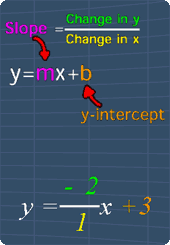
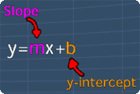

Slope-Intercept Form Examples
Lesson Objective
After learning about the slope-intercept form,
let's see some examples on how to use it to draw
the line of a linear equation.
About This Lesson
The Slope-Intercept From of a line equation
contains valuable information that can be used
to quickly draw the line of the linear equation.
This lesson will show you on how to draw the line using slope and y-intercept of a line of the following equations:
This lesson will show you on how to draw the line using slope and y-intercept of a line of the following equations:
- y = -2x +3
- 3y -2x = -6

Tip #1
This lesson involve some knowledge on
Slope-Intercept Form of an equation of a line.
You can recall it by watching the math video in
this lesson.
Tip #2
An equation of a line given may not be in
the
Slope-Intercept Form.
Therefore, it is important to change it to Slope-Intercept Form (see picture) before we can draw the line.
For example, if the given equation of the line is:
2y - 6x = -4
The Slope-Intercept form for this line is:
y = 3x -2
Where m = 3 and y-intercept = -2
Therefore, it is important to change it to Slope-Intercept Form (see picture) before we can draw the line.
For example, if the given equation of the line is:
2y - 6x = -4
The Slope-Intercept form for this line is:
y = 3x -2
Where m = 3 and y-intercept = -2

Math Video Transcript
Multiple Choice Questions (MCQ)
Now, let's try some MCQ questions to understand
this lesson better.
You can start by going through the series of questions on Slope-Intercept or pick your choice of question below.
You can start by going through the series of questions on Slope-Intercept or pick your choice of question below.
-
Question 1
on the changing an equation of a
line into
Slope-Intercept Form -
Question 2
on drawing a line by referring to
the slope and
y-intercept of a line